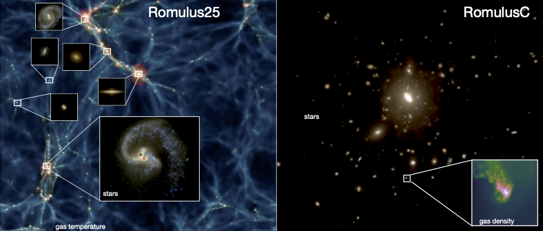

Overview
The Romulus simulations are large-scale cosmological simulations with resolution on par with the highest resolution simulations of this type run to date. The simulations are run with the most current cosmological parameters. Our flagship simulation is Romulus25, a uniform cosmological volume of 25 Mpc per side (about 80 million light years). Romulus25 provides a sample of 1000s of galaxies ranging from dwarf galaxies to massive galaxies at the centers of small groups. RomulusC is a zoom-in simulation of a galaxy cluster of 1014 solar masses, representing one of the highest resolution simulations to date of such a massive system.
A novel implementation of SMBH physics
An important and unique strength of the Romulus simulations is the careful implementation of SMBH physics, designed to provide a physically motivated sub-grid model for SMBH formation, dynamics, growth, and feedback that will be suited to study questions relevant to modern and future observations of SMBHs and active galactic nuclei (AGN).
Seeding SMBHs in the early Universe based on gas properties allows Romulus to predict where and when SMBHs grow independent of any assumptions about what galaxies they exist in. It also allows us to follow SMBH growth at early times and in a variety of environments, including dwarf and satellite galaxies.
An accretion model that accounts for angular momentum support is crucial for modeling SMBH growth in disk-dominated galaxies. By connecting accretion to the gas kinematics, Romulus can give us a better picture of the different modes of SMBH growth (e.g. growth within disk galaxies vs actively merging galaxies).
Accounting for unresolved dynamical friction acting on SMBHs allows Romulus to accurately track the orbital evolution of SMBHs within galaxies to sub-kpc accuracy. This is crucial for understanding phases of SMBH growth during perturvative events like mergers. It is also important for modeling when and where SMBHs will form binaries and potentially merge to better interpret and predict results from future gravitational wave missions like LISA. For more on this, check out our research on black hole dynamics.
A careful implementation of feedback, combined with improved hydrodynamics and high resolution, allows for an accurate representation of how SMBHs interact not only with their immediate environment, but the host galaxy as a whole. Our model is able to avoid any ad hoc prescriptions for wind or "bubble" formation that often require heavy handed assumptions about the nature of SMBH feedback. For more on this, check out our research on how feedback affects galaxy evolution.

{kind=link}